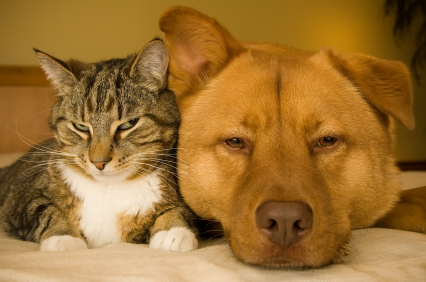
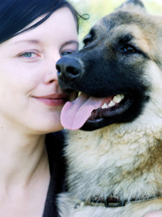

Welcome to Rent A Pet!
If you love to interact with pets like we do, you should enjoy looking around this site. Take a look at our Pet Profiles and take the opportunity to complete our survey.
Our Featured Pets
Woman and Small Dog




Featured Tribute

As a college student, I couldn’t own a dog, but Rent A Pet gave me the chance. I bonded with Kamaikaze, a German Shepherd who loves running and Frisbee. He even helped me meet my fiancée. more >>